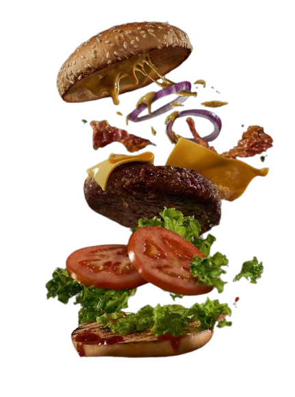
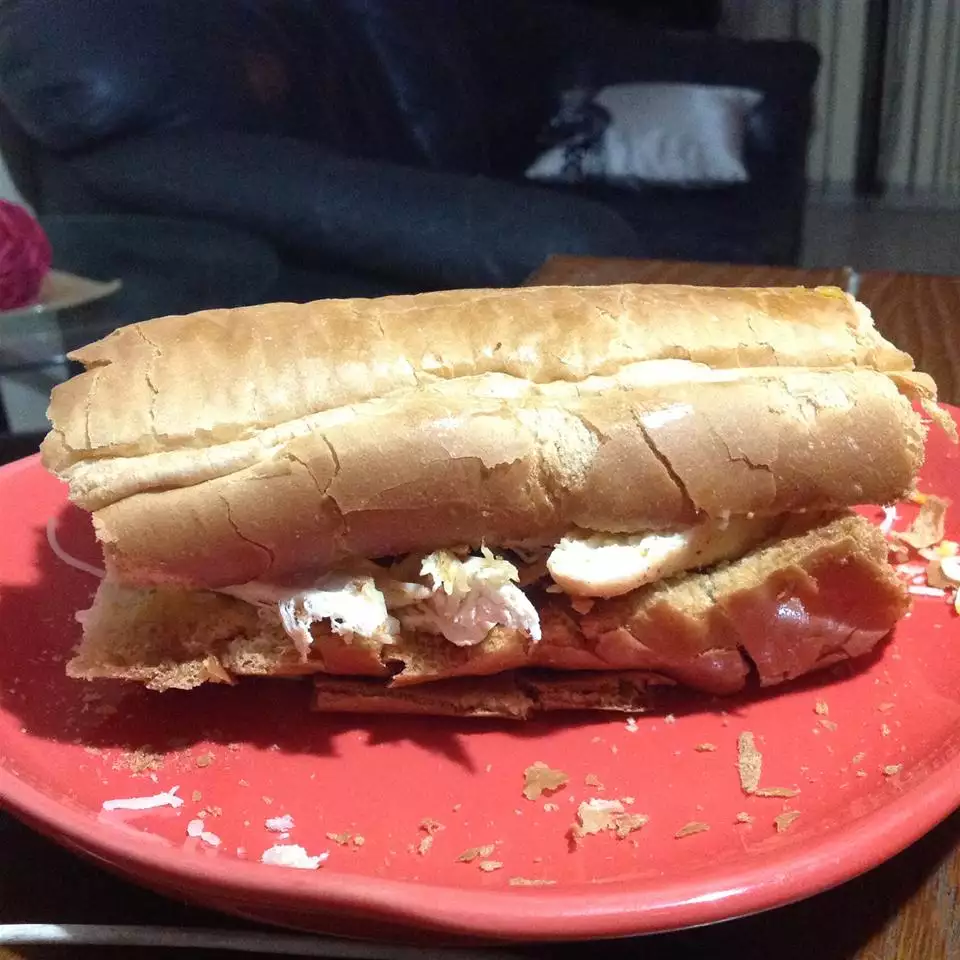

Description
If you enjoy the combination of garlic butter and cheese, this sandwich is sure to satisfy your taste buds. It can be prepared in less than 30 mins and serves four people.
Ingredients
1/2 cup butter
5 cloves garlic cloves, peeled and minced
4 hoagie rolls, split
2 pounds cooked chicken breast, cubed
11/2 cups shredded mozzarella cheese
Method
Preheat oven to 325 degrees F (165 degrees C).
Melt butter with garlic in a microwave-safe glass or ceramic bowl in 30-second intervals, stirring after each melting, for 1 to 3 minutes (depending on your microwave).
Place hoagie roll halves on a baking sheet and brush each with garlic-butter mixture.Divide chicken between each hoagie roll bottom; sprinkle cheese on each hoagie roll top.
Cook in the preheated oven until cheese is melted and bubbling, 10 to 20 minutes. Press top and bottom sandwich portions together.
NOTE:
Chicken breasts may be shredded or cubed, according to your preferences.
Reviews
|  |
Alicia ☆☆☆☆☆it was easy and fun to make. I had my kids help me:) it is so crunchy and with that the chicken ahhh!! we will be making this again!!! |